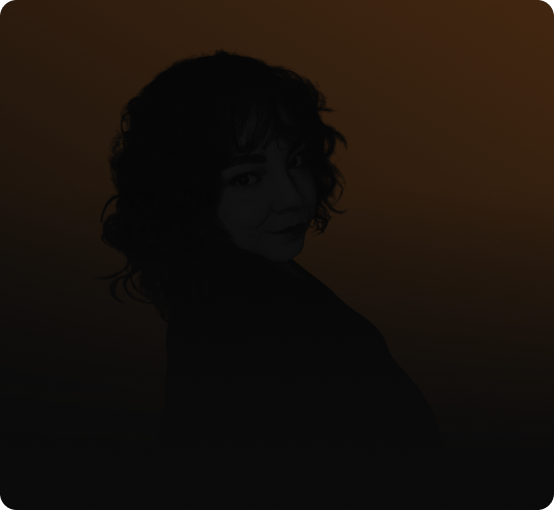
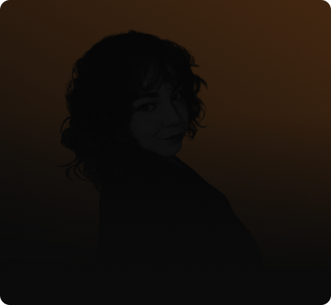

Sou gaúcha, tenho 26 anos e sou formada no tecnólogo em Sistemas para Internet. Atualmente, estou cursando minha segunda graduação em Sistemas de Informação. Possuo também uma especialização em Produtos Digitais através da EBAC e estou constantemente estudando interação humano-computador.
Estou no mercado de tecnologia há 5 anos atuando em áreas como Suporte, UX e Desenvolvimento, experiências que me proporcionaram uma forte compreensão de arquitetura de software, empatia, desenvolvimento de produtros digitais end-to-end e uma base sólida para análise e resolução de problemas.
Tenho um grande objetivo de transmitir conhecimento, me tornando uma mentora em projetos sociais e voluntários dentro de tecnologia.